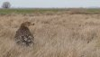
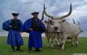
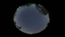

-

Parlagi sasok
Újra szabadon „Hans” és „Kurszán”, a két felgyógyult parlagi sas
-
A kilenlyukú híd
Érdekességek egy hídról
-

Hortobágy, élmény, szórakozás
Sasnap, délutáni-esti csillagászattal egybekötött Vadaspark látogatás.
-

Hortobágyi Csillagda
A csillagda kb. 7 m magas torony egy 3 m-es átmérőjű kupolával.

Hortobágyi Nemzeti Park
Világörökségi terület